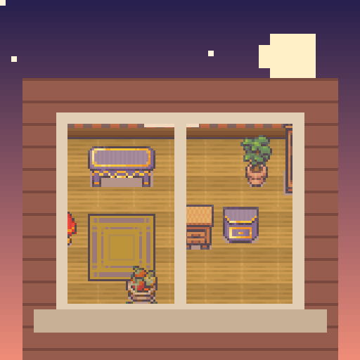

<- all projects

Windowlight Stories
PC
Volume
Live
Watch the windows. Piece together their lives.
June has just moved into a top-floor flat with a broken leg and a sketchbook. Across the street stands Juniper Court: eight flats, eight lives. Look into a flat at two times of day, flip between them and click everything that changed, from a missing fern to a cat asleep on the wrong rug. Every find adds a page to June's sketchbook. Forty little stories cross from window to window, a widower, a night baker, a ninety-year-old piano teacher, and all of them lead to one evening in the courtyard.